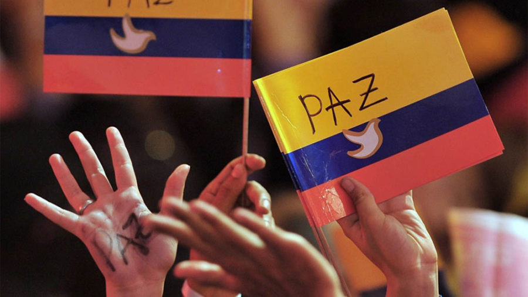

Lenguaje
Nombre: ComicVerse
¿Qué tipo de publicaciones se hacen?
En ComicVerse, los usuarios pueden compartir:
- Cómics originales: Artistas pueden publicar sus propias historietas, ya sean páginas individuales o series completas.
- Fanarts y bocetos: Ilustraciones inspiradas en cómics populares o personajes originales.
- Reseñas y análisis: Críticas y opiniones sobre cómics nuevos o clásicos.
- Noticias del mundo del cómic: Lanzamientos, eventos, adaptaciones al cine y más.
- Memes y humor gráfico: Contenido divertido relacionado con cómics y cultura geek.


Funciones principales
- Publicaciones interactivas: Los usuarios pueden subir imágenes, videos y texto con la posibilidad de recibir comentarios, reacciones y compartir en otras redes.
- Modo historieta: Una opción para visualizar cómics en formato de página deslizable o en viñetas interactivas.
- Foros y debates: Espacios temáticos para discutir sobre cómics, personajes y teorías.
- Marketplace de cómics: Un espacio donde creadores pueden vender cómics digitales o físicos.
- Perfiles personalizados: Artistas y lectores pueden crear su perfil con sus colecciones favoritas y sus propias creaciones.
- Eventos y desafíos: Concursos de ilustración, desafíos de dibujo y eventos en vivo con creadores.
- Suscripciones y apoyo a creadores: Los artistas pueden monetizar su contenido con suscriptores o donaciones.
- Modo lectura nocturna: Para una mejor experiencia al leer cómics en la plataforma.
Elementos principales
- Barra superior: Contiene el logo, barra de búsqueda, notificaciones y perfil del usuario.
- Feed de publicaciones: Muestra publicaciones de usuarios con imágenes, textos y botones de interacción.
- Barra de navegación inferior: Accesos rápidos a Inicio, Explorar, Publicar, Mensajes y Perfil.
- Perfil del usuario: Incluye banner y foto de perfil, nombre y biografía con número de seguidores.
- Botón de seguir: Permite interactuar con otros artistas y creadores.
- Miniaturas de cómics publicados: Acceso rápido a su contenido dentro de la app.
- Menú de navegación: Facilita moverse entre las secciones de la plataforma.
Educación en Colombia: una promesa aún por cumplir
En Colombia, la educación ha sido presentada históricamente como una herramienta para la transformación social. Sin embargo, para muchos jóvenes, especialmente aquellos en condiciones de vulnerabilidad, esta promesa aún no se cumple. A pesar de esfuerzos como el programa “Generación E” y las propuestas de gratuidad en la educación superior pública, persisten grandes obstáculos: falta de cobertura, desfinanciamiento y profundas desigualdades territoriales. Miles de estudiantes de zonas rurales o barrios populares luchan día a día no solo por ingresar a una universidad, sino por mantenerse en ella. Los problemas van desde la carencia de recursos para transporte y alimentación, hasta la sobrecarga de las instituciones públicas, que operan con presupuestos limitados. La calidad educativa también se ve afectada, con currículos que muchas veces no responden a las realidades locales ni preparan a los jóvenes para enfrentar un mundo laboral cambiante. Frente a esta situación, la juventud ha demostrado ser protagonista. Las movilizaciones estudiantiles de los últimos años reflejan una generación consciente, crítica y dispuesta a defender su derecho a una educación digna. No se trata solo de pedir más inversión, sino de repensar el modelo educativo para que sea más inclusivo, justo y conectado con las necesidades del país.En un momento en que Colombia busca cerrar brechas sociales y avanzar hacia la equidad, garantizar una educación superior de calidad debe ser prioridad. No podemos seguir exigiendo a los jóvenes que cambien su futuro si el Estado no cumple con su parte.
Reflexión
La educación en Colombia ha sido vendida como la clave del progreso, pero para muchos jóvenes sigue siendo un privilegio y no un derecho. En un país donde el lugar de nacimiento aún determina las oportunidades, estudiar se convierte en un acto de resistencia. Ver a jóvenes recorrer largas distancias, trabajar de noche o endeudarse para poder asistir a clases, debería movernos como sociedad. Reflexionar sobre la educación es mirar al espejo de lo que somos y de lo que queremos ser. Un país que le da la espalda al conocimiento le cierra la puerta a su propio futuro. No basta con discursos; es urgente actuar. Porque cuando un joven abandona la universidad por falta de apoyo, no solo pierde él: perdemos todos.
Juventud reclutada: una herida abierta en Colombia
En muchas regiones de Colombia, especialmente en zonas rurales como el Chocó y el Cauca, cientos de niños y adolescentes siguen siendo reclutados por grupos armados ilegales. Este fenómeno, aunque conocido, no recibe la atención suficiente. La pobreza, la falta de educación y la ausencia del Estado son factores que los empujan a un conflicto que no eligieron. Más allá de las cifras, cada joven reclutado representa una historia truncada. El periodismo debe visibilizar estas realidades, no como estadísticas frías, sino como testimonios urgentes que claman por justicia y protección. Colombia no puede hablar de paz si permite que sus niños sigan siendo víctimas del conflicto. Defenderlos es una responsabilidad colectiva que no puede seguir postergándose.
Reflexión
¿Hasta cuándo será normal que en ciertas regiones de Colombia crecer signifique elegir entre un fusil o el hambre? La indiferencia social ante el reclutamiento forzado perpetúa un ciclo de violencia que afecta no solo a las víctimas directas, sino al tejido social entero. No se puede hablar de paz mientras los niños siguen siendo utilizados como soldados, informantes o víctimas silenciosas de un conflicto que nunca terminó del todo.
english
Economic Impact of Peace in Colombia
The inograph presents a detailed analysis of the economic effects of the 2016 peace agreement in Colombia. Prior to the signing
of this agreement, the country was mired for more than five decades in an internal armed conflict involving guerrilla groups such
as the FARC, paramilitary forces, drug cartels, and the government itself.
This prolonged violence caused deep instability, forced displacement and economic stagnation, especially in rural areas, which were the most
affected by the conflict. However, the peace agreement with the FARC marked a historic milestone and a fundamental step towards national
reconciliation, which opened up new opportunities for the country's economic development.
One of the main positive consequences of the signing of the agreement was the increase in investor confidence, both national and
international. During the conflict, Colombia faced severe difficulties in attracting foreign investment due to security risks,
extortion, and instability in many regions of the country. With the cessation of hostilities, the situation improved, and foreign
direct investment (FDI) flows grew, especially in key sectors such as agriculture, tourism, and infrastructure. This injection of
capital not only favored the growth of existing industries, but also allowed the expansion of national companies into regions
previously affected by violence, which now enjoy greater security and new economic opportunities
The tourism sector has been one of the great beneficiaries of peace. Regions that were previously virtually inaccessible due
to violence, such as Caño Cristales and the Pacific coast, have seen a notable increase in the number of tourists, both domestic
and international. Opening up these areas to tourism not only boosts the local economy, but also improves the country's international
image. In the agricultural field, peace has favored the development of crops in areas previously in conflict. The production of coffee,
cocoa and avocado has boomed in these territories, which has generated jobs and contributed to the revitalization of the rural economy.
In addition, infrastructure projects, such as the construction of roads and the improvement of connectivity, have managed to integrate
these areas with the rest of the country, reducing costs and increasing productivity.
Despite the clear progress and benefits of the agreement, the text also notes that Colombia continues to face significant challenges.
Some armed groups continue to operate in certain regions, leading to uncertainty and security concerns. Social inequality and the
reintegration of ex-combatants are also complex issues that require long-term solutions. Peace, although it has generated great advances,
has not definitively solved all the country's structural problems. However, the overall economic outlook is optimistic, and the text
highlights that the country is in a process of institutional strengthening, with the aim of attracting more investment and ensuring
that the fruits of peace reach all Colombians.
In conclusion, the text underlines that the peace process has had a transformative impact on Colombia's economy. Improved security,
investment attraction, and growth in key sectors have created new opportunities for economic development. However, for these benefits
to be sustainable over time, it is necessary to continue working on national reconciliation and the economic inclusion of all sectors
of society. Only in this way will Colombia be able to guarantee a prosperous and stable future for future generations.
Historia de Colombia
El Proceso de Paz en Colombia: ¿Se ha logrado la paz?
Desde hace más de 50 años, Colombia ha vivido un conflicto armado que ha afectado a millones de personas. Durante mucho tiempo, las guerrillas, los paramilitares, los narcotraficantes y el mismo Estado han estado en guerra, dejando víctimas, desplazamientos y mucho sufrimiento.
En 2016, el gobierno colombiano y la guerrilla de las FARC firmaron un Acuerdo de Paz con el objetivo de terminar la violencia. Sin embargo, aunque el acuerdo trajo cambios importantes, todavía hay problemas que hacen que muchos se pregunten si realmente se ha logrado la paz.
¿Cómo comenzó el conflicto?
La violencia en Colombia viene desde hace muchas décadas. Uno de los primeros problemas fue la guerra entre los partidos políticos tradicionales: los liberales y los conservadores. Entre 1948 y 1958, esta lucha causó la muerte de más de 200.000 personas, en un período conocido como "La Violencia".
Para intentar acabar con esta guerra, en 1958 se creó el Frente Nacional, un acuerdo en el que los dos partidos se turnaban en el poder. Sin embargo, este acuerdo dejó por fuera a otros sectores de la sociedad, lo que hizo que surgieran grupos guerrilleros que decían luchar por los derechos de los campesinos.
Uno de estos grupos fue la guerrilla de las FARC-EP, que nació en 1964. Con el tiempo, las FARC se hicieron más fuertes y empezaron a financiarse con el narcotráfico, secuestros y extorsiones. Para combatirlas, aparecieron los grupos paramilitares, lo que hizo que el conflicto se volviera más grande y violento.
¿Cómo se llegó al Acuerdo de Paz?
Durante muchos años, diferentes presidentes intentaron hacer acuerdos de paz con las guerrillas, pero no funcionaron. Uno de los intentos más recordados fue en el Caguán (1999-2002), cuando el gobierno de Andrés Pastrana les dio a las FARC una zona libre de militares para negociar. Sin embargo, las FARC siguieron secuestrando y atacando, y el proceso fracasó.
En 2012, el presidente Juan Manuel Santos empezó un nuevo proceso de paz en La Habana, Cuba. Después de cuatro años de negociaciones, el 26 de septiembre de 2016 se firmó el acuerdo en Cartagena. Pero cuando se hizo un plebiscito para que la gente votara si estaba de acuerdo o no, el 50,2% de los votantes lo rechazó. Esto obligó a hacerle cambios antes de aprobarlo en noviembre de 2016.
¿Qué ha pasado después del Acuerdo de Paz?
Cosas que han mejorado
- Desmovilización de las FARC: Más de 13.000 exguerrilleros dejaron las armas y se reincorporaron a la sociedad.
- Creación de la JEP: Un sistema de justicia para juzgar crímenes cometidos durante la guerra.
- Más participación política: Se creó el partido político Comunes, formado por excombatientes.
- Atención a víctimas: Se han dado indemnizaciones y se han hecho actos de perdón.
Problemas y desafíos
- Aumento de la violencia en algunas zonas: Aunque las FARC se desmovilizaron, algunos grupos disidentes siguen delinquiendo.
- Asesinato de líderes sociales: Desde 2016, más de 1.400 líderes sociales han sido asesinados.
- Cumplimiento lento del acuerdo: Muchas promesas, como la reforma agraria, no se han cumplido completamente.
Reflexión: ¿Realmente estamos en paz?
El Acuerdo de Paz fue un paso importante para reducir la violencia en Colombia, pero no ha sido suficiente para garantizar una paz total. La guerra no terminó por completo, sino que cambió de forma.
Uno de los problemas más graves es la falta de apoyo a las regiones más afectadas por el conflicto. Si el gobierno no cumple con las promesas del acuerdo, los grupos ilegales seguirán creciendo.
También es importante que la gente entienda que la paz no se logra solo con la firma de un papel. Se necesita que todos participemos, denunciemos las injusticias y apoyemos la reconciliación.
Recursos Interactivos sobre el Proceso de Paz en Colombia
- Biblioteca Abierta del Proceso de Paz (BAPP) - Plataforma con líneas de tiempo, mapas interactivos y documentos clave sobre el acuerdo.
- Juegos Interactivos de la BAPP - Quizzes, mapas interactivos y rompecabezas para aprender sobre el proceso de paz.
- Cartilla ABC del Acuerdo Final - Documento con una explicación accesible de los puntos principales del acuerdo.
Video Explicativo
Economía
La globalización ha cambiado muchas cosas en Colombia, tanto de manera positiva como negativa. En la economía,
ha permitido que el país tenga más comercio con el mundo y reciba inversiones extranjeras, lo que ha impulsado
sectores como el petróleo, la minería y la agricultura. Sin embargo, también ha hecho que Colombia dependa de
mercados externos, lo que significa que si hay una crisis global, el país también se ve afectado. Además, aunque
han llegado muchas empresas internacionales, las pequeñas y medianas empresas colombianas tienen más dificultades
para competir.
En la cultura, la globalización ha traído una gran influencia extranjera. La música, el cine y la moda de otros
países han cambiado los gustos de muchas personas, y aunque esto ha permitido una mayor diversidad, también ha hecho
que algunas tradiciones colombianas se vayan perdiendo poco a poco. La comida rápida y las marcas internacionales son
cada vez más populares, lo que afecta a los productos locales.
En cuanto a la tecnología, ha permitido que más personas accedan a internet, a la educación en línea y al teletrabajo.
Sin embargo, no todos pueden aprovecharlo de la misma manera, ya que en las zonas rurales todavía hay muchas dificultades
para acceder a tecnología avanzada. Además, la automatización y la inteligencia artificial están cambiando los empleos, lo
que significa que muchas personas tendrán que adaptarse a nuevas formas de trabajo.
La globalización también ha afectado la sociedad. Ha aumentado la migración dentro y fuera del país, haciendo que las ciudades
sean más diversas, pero también generando problemas de empleo e infraestructura. La desigualdad social ha crecido porque no todos
tienen las mismas oportunidades. Mientras algunos aprovechan las ventajas de la globalización, otros siguen enfrentando dificultades
económicas.
Por último, el impacto ambiental ha sido considerable. La explotación de recursos naturales ha aumentado la deforestación y la
contaminación, especialmente por la minería y la ganadería. Sin embargo, la globalización también ha traído una mayor conciencia
sobre la importancia del medioambiente y ha impulsado regulaciones para reducir el daño ecológico.
En conclusión, la globalización ha traído muchas oportunidades para Colombia, pero también grandes desafíos. Ha permitido el
desarrollo económico y el acceso a nuevas tecnologías, pero ha generado problemas como la desigualdad social y el daño ambiental.
Para que el país pueda aprovechar mejor sus beneficios, es importante encontrar un equilibrio, protegiendo la cultura y el medioambiente
mientras se sigue avanzando en lo económico y tecnológico.
geografia
mapa interactivoFilosofía
La ética política en Colombia: desafíos y reflexiones
La ética política es la base sobre la cual se construye una democracia justa y equitativa. Se refiere a los principios morales que deben guiar la toma de decisiones en la gestión pública y la representación ciudadana. En Colombia, este tema ha sido crucial en los últimos años, especialmente en el contexto de los Acuerdos de Paz y la persistente desigualdad económica.
Los Acuerdos de Paz firmados en 2016 con las FARC representaron un punto de inflexión en la historia del país. Más allá de su contenido, el proceso puso a prueba la ética de los actores políticos. ¿Debe la paz estar por encima de cualquier interés partidista? ¿Es legítimo desconocer o modificar un acuerdo negociado con apoyo internacional? La polarización en torno a estos interrogantes dejó en evidencia la fragilidad ética de la política colombiana, donde muchas decisiones parecían estar motivadas más por cálculos electorales que por un compromiso genuino con la reconciliación.
Por otro lado, la desigualdad económica sigue siendo una de las mayores deudas del Estado con la sociedad. A pesar del crecimiento económico, la brecha entre ricos y pobres se mantiene, afectando especialmente a las comunidades rurales y a los sectores históricamente marginados. La ética política exige preguntarse: ¿los líderes están realmente comprometidos con la justicia social o simplemente administran la desigualdad sin transformarla? ¿Es ético que en un país con tanta riqueza natural y cultural existan niveles tan altos de pobreza?
La corrupción es otro de los grandes desafíos éticos en la política colombiana. Casos de desfalcos, clientelismo y compra de votos han debilitado la confianza en las instituciones. La pregunta que surge es: ¿cómo puede la ciudadanía exigir mayor ética en la política si muchas veces premia con el voto a quienes han incurrido en prácticas cuestionables?
En última instancia, la ética política no es solo un tema de gobernantes, sino también de ciudadanos. La sociedad colombiana debe preguntarse: ¿estamos dispuestos a elegir líderes que prioricen el bien común sobre sus intereses personales? ¿Qué acciones concretas podemos tomar para exigir mayor transparencia y responsabilidad?
El futuro de Colombia depende de la capacidad de su política para alinearse con principios éticos sólidos. Más allá de ideologías y partidos, el reto es construir un país donde la justicia, la equidad y la paz sean más que discursos y se conviertan en realidades tangibles.
¡Participa y comparte tu opinión!
Deja tu comentario a continuación:
Comentarios:
Cátedra de Paz
 El proceso de paz en Colombia entre 2012 y 2016 representó un esfuerzo significativo por parte del gobierno y las Fuerzas Armadas Revolucionarias de Colombia (FARC) para poner fin a décadas de conflicto armado. Sin embargo, la reconciliación y la justicia social emergieron como desafíos centrales en este camino hacia la paz.
DESAFÍOS EN LA RECONCILIACIÓN
La reconciliación ha sido un proceso bastante complejo debido al gran dolor de las
víctimas, la violencia y el conflicto armado son huellas imborrables y heridas profundas
que marcaron en la sociedad. Muchas personas sienten que el proceso de paz no ha
hecho justicia a su sufrimiento. Un campesino desplazado expresó en una entrevista:
"Nos piden que perdonemos, pero ¿cómo se perdona cuando te lo han quitado todo? Mi
familia no tiene tierra, no tiene casa, y los que hicieron daño están libres."
(Centro Nacional de Memoria Histórica, 2018).
La resistencia al perdón por parte de las víctimas es un obstáculo clave para la reconciliación.
Además, aunque en el acuerdo se creó la jurisdicción especial para la paz, un mecanismo de justicia transicional por
medio del cual se investiga y juzga a los integrantes de las FARC, miembros de la Fuerza
Pública y terceros que hayan participado en el Conflicto armado interno de Colombia,
muchos excombatientes se niegan a reconocer la totalidad de sus crímenes, generando
desconfianza entre las comunidades víctimas que esperan una total y completa justicia.
Otro obstáculo para la reconciliación es la estigmatización de los excombatientes. Aunque miles de desmovilizados han intentado reintegrarse a la sociedad, muchos enfrentan discriminación y dificultades para encontrar empleo. En una entrevista, un exguerrillero explicó: "Salimos de la guerra para vivir en paz, pero nos tratan como si nunca hubiéramos cambiado. Queremos trabajar, pero nadie nos da la oportunidad." (El Espectador, 2019).
DESAFÍOS EN LA JUSTICIA SOCIAL
Uno de los pilares del Acuerdo de Paz fue la reforma rural integral, que buscaba devolver
tierras a campesinos desplazados y reducir la desigualdad en el campo. Sin embargo, la
implementación ha sido lenta y, en muchos casos, inexistente. Un líder comunitario de
Catatumbo expresó en una entrevista:
"Nos prometieron que la paz traería desarrollo, pero seguimos sin luz, sin agua potable y sin oportunidades."
(El País, 2021).
Además, la violencia no desaparece. Desde la firma del acuerdo en 2016, más de 1.300 líderes sociales y defensores de los derechos humanos que apoyaban a las víctimas desplazadas por el conflicto han sido asesinados en los últimos años. Muchos de ellos por defender los derechos de sus comunidades o por reclamar tierras que antes estaban en manos de grupos armados o narcotraficantes.
La fiscal general de Colombia, Luz Adriana Camargo, declaró: "Colombia sigue siendo el país más peligroso del mundo para defender los derechos humanos." (El País, 2024).
Además, la justicia social se ha visto afectada por la corrupción, ya que fondos que iban para el desarrollo de zonas afectadas por el conflicto han sido desviados por funcionarios corruptos, dejando a personas sin acceso a la salud, a la educación y al empleo.
Tenemos un proceso de paz incompleto. Sin verdad, sin apoyo real a las víctimas y sin inversión en las comunidades más afectadas, la paz sigue siendo frágil. Para que la paz en Colombia sea sostenible, es necesario garantizar la seguridad de líderes sociales, combatir la corrupción y cumplir con los compromisos adquiridos en el acuerdo.
Religión y Política en Colombia
Siempre se dice que la política y la religión son dos temas que no se deben tratar en la mesa. Sin embargo, desde el inicio de los tiempos esta relación ha sido bastante controversial y en ocasiones violenta. Desde una aproximación histórica se sabe que la religión y la política han sido casi inseparables o al menos en su mayoría gracias a que la religión ha jugado un papel fundamental en la configuración del poder político, las normativas sociales y la identidad cultural del país y es justamente ahí donde estos temas se encuentran estrechamente relacionados.
Desde épocas antiguas, la religión se ha significado una forma de estructura jerárquica para la sociedad, una imagen de poder y es gracias a ello que siempre ha jugado un papel predominante en la historia del mundo.
En Colombia durante la colonia, la iglesia católica tuvo un papel central en el virreinato de la nueva granada, la evangelización de los pueblos indígenas fue una de las principales herramientas de dominación y durante esta época el clero desempeño actividades tanto religiosas como administrativas.
En 1810 con la independencia de Colombia la influencia de la iglesia católica continúo siendo un factor predominante. Durante en siglo XIX iniciaron los conflictos entre los liberales y los conservadores acerca de el papel de la religión en la sociedad. Como respuesta a esto la constitución de 1886 estableció el catolicismo como religión oficial del estado, lo que consolido la religión en asuntos educativos y políticos.
En el siglo XX la constitución de 1991 presento un fuerte impacto al declarar a Colombia como un estado laico, garantizando la libertad de culto y estableciendo la separación entre la iglesia y el estado. Sin embargo, aun con esto la iglesia sigue teniendo una fuerte influencia en temas como el aborto, la eutanasia y la educación sexual.
Impacto en las comunidades indígenas
Mucho antes de la llegada de los europeos, las comunidades indígenas de Colombia tenían sistemas religiosos diferentes y profundamente conectados con sus creencias espirituales. Religiones como la de los muiscas, los wayúu y los emberá concebían el mundo en términos de equilibrio espiritual y respeto por la naturaleza.
Actualmente, estas creencias siguen vigentes en muchas comunidades indígenas, influyendo en su propia organización política y en sus constantes luchas por la autonomía y la defensa de su territorio. Existen diversos movimientos indígenas que han revindicado sus prácticas espirituales y su visión del mundo en debates sobre derechos territoriales y medioambientales.
Un ejemplo de esto es el conocido movimiento de la Guardia Indígena, el cual se define como un organismo ancestral propio y como un instrumento de resistencia, unidad y autonomía en defensa del territorio este movimiento combina principios espirituales con activismo político para defender sus derechos y territorios frente a actores estatales.
Ejemplos contemporáneos de religión en la política colombiana
La política colombiana sigue marcada por la presencia de grupos religiosos. Diversas iglesias cristianas evangélicas han ganado protagonismo en los últimos años, influenciando el debate público y electoral. Figuras políticas han buscado apoyo en estos grupos para obtener respaldo electoral como por ejemplo el plebiscito por la paz de 2016, se consultó a la población colombiana si aprobaba o no el acuerdo de paz entre el gobierno y las FARC.
Durante la campaña, algunos sectores religiosos, especialmente iglesias cristianas evangélicas y sectores conservadores del catolicismo, promovieron el voto por el "No" dado que su principal argumento era que para ellos el acuerdo contenía elementos que promovían una ideología de género que afectaban los valores de la familia.
La relación entre la religión y la política ha evolucionado a través de los años, sin embargo, a pesar de que el estado define a Colombia como un país laico la religión sigue siendo un factor clave e influyente en la participación política tanto en debates como en movimientos sociales.
plan lector
reseña sobre romeo y julieta
Romeo y Julieta, de William Shakespeare, es una de las tragedias más icónicas de la literatura universal. La historia de los jóvenes amantes de Verona, atrapados en una lucha entre dos familias rivales, expone con gran dramatismo las consecuencias del odio, la falta de diálogo y las decisiones políticas impulsadas por el orgullo y la venganza.
Desde una perspectiva crítica, la obra no solo es una historia de amor imposible, sino también una profunda reflexión sobre los conflictos sociales y políticos que impiden la convivencia pacífica. La enemistad entre los Montesco y los Capuleto refleja dinámicas de poder que, en contextos contemporáneos como el de Colombia, pueden compararse con la polarización política y la falta de acuerdos éticos en la toma de decisiones. Así como en Verona las disputas familiares llevan a la tragedia, en Colombia la falta de consenso en temas como los Acuerdos de Paz ha perpetuado la división y el sufrimiento de muchas comunidades.
Otro eje de conexión con la realidad colombiana es la desigualdad social. Romeo y Julieta pertenecen a familias privilegiadas, pero su historia también incluye personajes como el fraile Lorenzo o la nodriza, quienes representan a los sectores menos poderosos y muchas veces invisibilizados. En la sociedad colombiana, la distancia entre las élites y los sectores marginados ha sido un factor que dificulta la construcción de un país más equitativo. La pregunta clave es: ¿hasta qué punto la clase política actúa como los Montesco y Capuleto, priorizando sus intereses sobre el bienestar de la sociedad en su conjunto?
Finalmente, la obra deja una lección sobre las consecuencias de la inacción y la falta de responsabilidad. Solo después de la muerte de los protagonistas, las familias rivales entienden la magnitud del daño causado. En Colombia, ¿es necesario llegar a tragedias extremas para que los líderes comprendan la importancia de la ética en la política? ¿Qué se necesita para que los ciudadanos y gobernantes asuman un compromiso real con la reconciliación y la justicia social?
En conclusión, Romeo y Julieta no es solo una historia de amor, sino un espejo de las tensiones humanas que siguen vigentes en la actualidad. Su mensaje sobre el peligro del odio y la urgencia de la empatía resuena con la realidad colombiana, donde la ética política sigue siendo un desafío pendiente para la construcción de un futuro más justo.
Imagen representativa

Cuestionario
¡Participa en el cuestionario sobre la obra! Haz clic en el siguiente enlace:
Ir al cuestionario